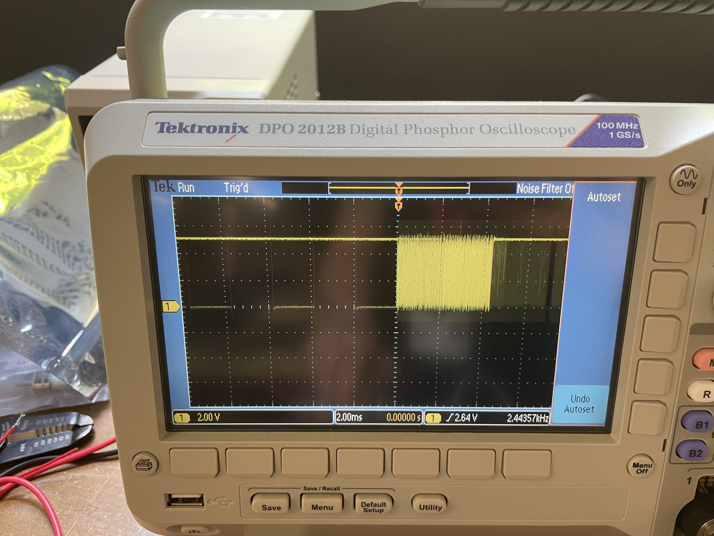
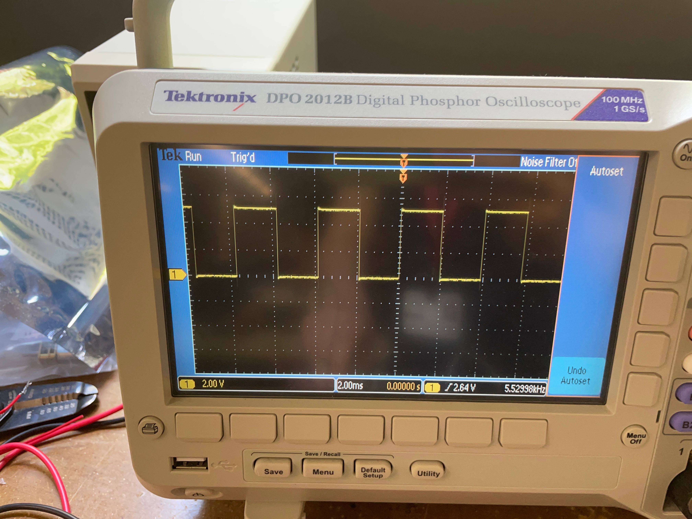
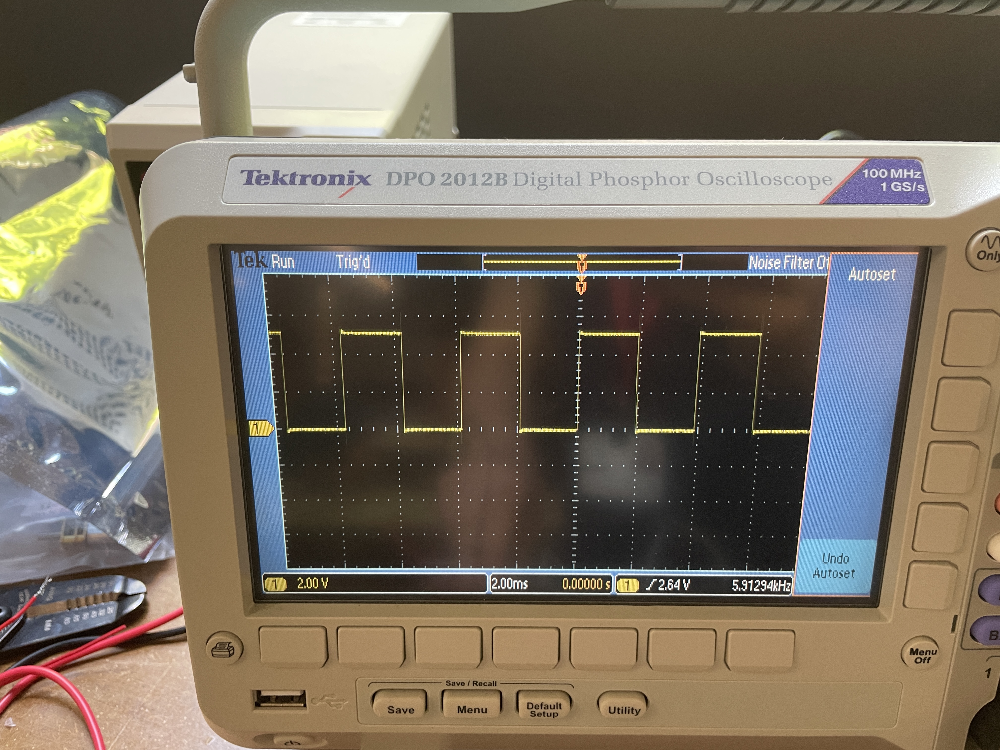

# Week 7: Electronic Output Devices
[home](../index.html).
##Part 1: Use Input and Output Devices Controlled by a Microcontroller Program with Class Structure
###Code:
My goal for this week was to create a piezo buzzer that could play a complete octave of notes, with each note being controlled by a button.
I created class 'button' so I could then create endless objects of with required characteristics and play all the required notes.
Then I made a custom function to play the correct note for the corresponding button.
Here is the code for everything together:
<pre><code class="language-arduino">
class Button {
// Class Member Variables
// These are initialized at startup
int buttonPin; // the number of the pin
long frequency; // the frequency
int playTime; // the amount of time the buzzer will play after the button is pressed
// These maintain the current state
int buzzerState; // buzzerState used to set the buzzer
// Constructor - creates a Button and initializes the member variables and state
public:
Button(int pin, long freq, int time_){
buttonPin = pin;
pinMode(buttonPin, INPUT);
frequency = freq;
playTime = time_;
buzzerState = LOW;
}
void playNoise(int buttonPin, int buzzerPin, int frequency, int playTime){ //Do I need buttonPin and frequency, as they are redundant but still get called on in this function?
int buttonState = 0;
buttonState = digitalRead(buttonPin); // read new state
if (buttonState == HIGH) {
Serial.println("The button is being pressed");
myTone(buzzerPin, frequency, playTime); // turn on
}
else
if (buttonState == LOW) {
Serial.println("The button is unpressed");
myTone(buzzerPin, 0, 5); // turn off
}
}
///////////////////////////////////////////////////////////////////////////////////////////////////
void myTone(int pin, int frequency, int duration){
int startTime = millis();
int period = 1000000/frequency;
while ((millis() - startTime) < duration){
digitalWrite(pin, LOW);
delayMicroseconds(period/2);
digitalWrite(pin, HIGH); //reversed high and low in this while-- change back if this causes problems
delayMicroseconds(period/2);
}
}
};
///////////////////////////////////////////////////////////////////////////////////////////////////
int buzzerPin = 10;
int buttonState = 0;
Button button1(2, 262, 500);
Button button2(3, 294, 500);
Button button3(4, 330, 500);
Button button4(5, 349, 500);
Button button5(6, 392, 500);
Button button6(7, 440, 500);
Button button7(8, 493, 500);
Button button8(9, 523, 500);
void setup() {
Serial.begin(9600); // initialize serial
pinMode(buzzerPin, OUTPUT); // set arduino pin to output mode
}
void loop() {
button1.playNoise(2, 10, 262, 500);
button2.playNoise(3, 10, 294, 500);
button3.playNoise(4, 10, 330, 500);
button4.playNoise(5, 10, 349, 500);
button5.playNoise(6, 10, 392, 500);
button6.playNoise(7, 10, 440, 500);
button7.playNoise(8, 10, 493, 500);
button8.playNoise(9, 10, 523, 500);
}
</code></pre>
###Circuit:
For the circuit, I just wired 8 buttons to digital pins and wired the piezo to it's pin and ground. Here is what the final circuit looks like from a variety of angles:
<img src="IMG_6109.jpeg" alt="circuit" style="width:300px;height:400.7px;">
<img src="IMG_6104.jpeg" alt="circuit" style="width:300px;height:400.7px;">
<video width="262" height="500" controls>
<source src="272c58b8-79bb-4bca-a932-48488dc1ec6f-0-1f9699af-75d3-4570-9f23-146e883814a2.mp4" type="video/mp4">
</video>
##Part 2: Using an Oscilloscope to Analyze the Circuit
### Time Domain & Fixed Clock & Speed:
####Time Domain:
A time domain is when there is something shown/evaluated as a function of time. The oscilloscope graph is in the time domain as it shows voltage as a function of time.
???SO THE TIME DOMAIN IS VOLTAGE????
</br></br>
####Speed:
The speed of my circuit is: 2.15436kHz - 6.34549kHz
- the speed varies because of the different frequencies the piezo plays
</br>
This is as it says in the bottom right corner of the oscilloscope screen. Note that Hz = s^-1.
</br></br>
####Fixed Clock:
My circuit is a fixed clock.
</br>
Clocks in electronics are signals that oscillate between a high and low state. Therefore, a fixed clock is a clock signal that oscillates at a constant frequency between it's two states.
</br></br>
The signals being sent between the piezo and the computer are clock signals because each note causes them to oscillate at a constant frequency.
</br></br>
This constant frequency can be seen in the images taken of the different notes, as each of the peaks are the same as their neighbours.
</br></br>
###Images and Readings:
Here are all the images and videos referenced above.
- notice that when I press successively higher notes, the width of the square wave decreases
- also, in the second section of the video I press on two notes at once- notice the change in the wavelength of the square wave, where again it shrinks as frequency increases.
<img src="IMG_6116.jpeg" alt="circuit" style="width:401.7px;height:301.7px;">



<img src="IMG_6118.jpeg" alt="circuit" style="width:401.7px;height:301.7px;">
<video width="262" height="500" controls>
<source src="207484e3-bb76-4068-8f7c-c6fbd58b978d-0-0d540e91-0e88-43e9-899b-92f44661a280.mp4" type="video/mp4">
</video>
##Part 3: Design for Next Week: CNC Milling, Molding and Casting
I wanted to make a small puzzle with the CNC machins and so I designed the following in fusion 360:
<img src="assembled.JPEG" alt="circuit" style="width:264.6px;height:148px;">
<img src="overheadview.JPEG" alt="circuit" style="width:325px;height:60.34px;">